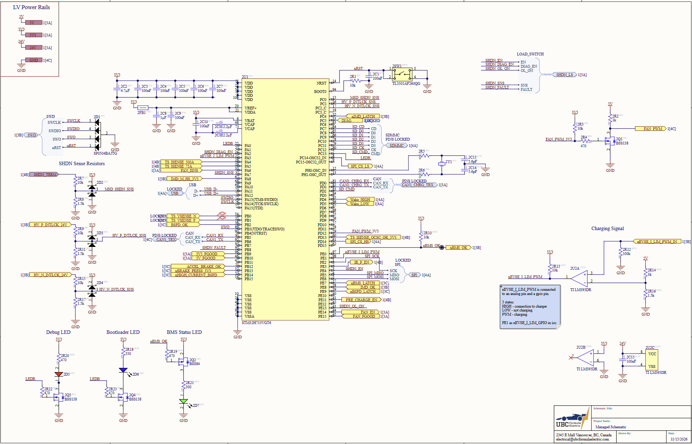
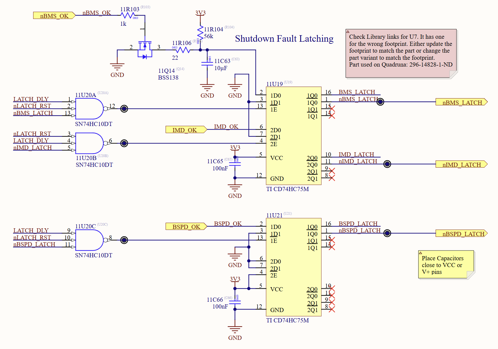
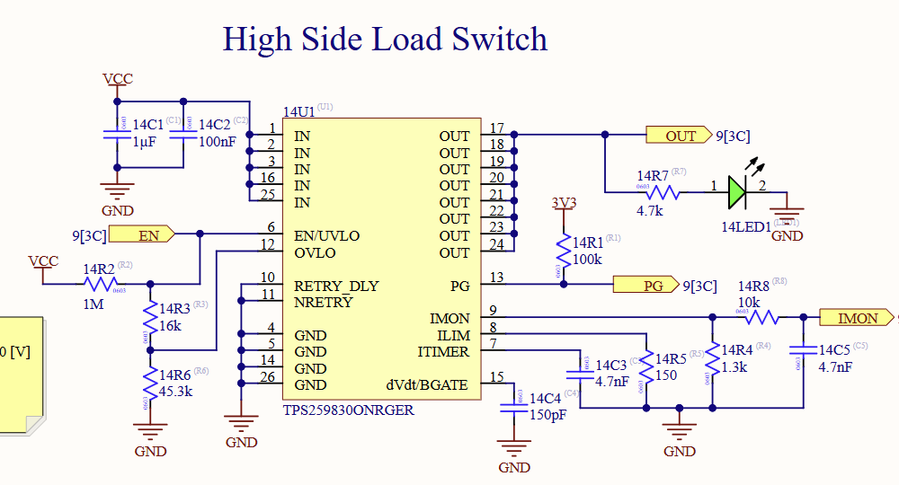

Updated the design of a custom 600V Battery Management System (BMS) PCB using Altium Designer for the UBC Formula SAE Electric vehicle. The board interfaces control electronics with high-voltage power delivery, monitors cell voltages and temperatures, enforces strict galvanic isolation via isoSPI, and transmits real-time telemetry over a CAN network. Board is set to be manufactured in December and validated in January for integration into the 2027 car.

600V BMS 3D Board View
Key System Architecture
MCU Control
- Redid pinout for STM32H7 MCU, integrating SPI, USB, SDMMC, and 2 independant CAN Buses
- Implemented a PWM drive for the battery cooling fans so the MCU can adjust speed based on cell temperatures.
- Enabled the MCU to communicate with the new ADBMS2950 shunt ressitor PCB through isoSPI.

isoSPI Communication
- Fully Designed the new ADBMS6822 isoSPI transceiver for robust differential signaling in high-noise environments.
- Implements LC Pi-filters (100nF, MPZ ferrite beads, 4.7µF bypass) to suppress high-frequency switching noise.
- Daisy-chained and reversable architecture will prevent battery communication faults, enhancing reliability.

isoSPI Isolation
- Designed a new isoSPI transformer circuit to be implemented across all 12 battery PCBs.
- Implemented a lowpass filter, TVS diodes, and impedance matching resistors to maintain signal integrity.

Tractive System Current Sense
- Adjusted current sensing circuitry to integrate the new DHAB S/124 hall effect sensor's transfer function.
- Performed power calculations and circuit simulations to ensure hardware current thresholds are accurate.

Hardware-Controlled Shutdown Logic
- Revised shutdown circuit logic to ensure the vehicle shutdown loop is normally open.
- Redid latch reset button circuitry, ensuring shutdown latches can be reset from outside the battery.
- Created a truth table to validate performance for different inputs.

Fan Control eFuse
- TPS25983 eFuse regulates power to 10 accumulator cooling fans throughout the battery.
- Adjusted eFuse slew rate and timout time to account for inductive start up current .

Key Skills & Takeaways
- High-Voltage PCB Design: Architecting 4-layer boards to safely manage 600V systems with strict clearance, creepage, and galvanic isolation requirements.
- Safety Critical Logic: Designing and validating latching hardware fault detection using discrete logic gates and analog comparators.
- Telemetry Integration: Bridging the high-voltage and low-voltage domains using isoSPI and CAN communication protocols for real-time monitoring.
- Component Selection: Implementing specialized automotive-grade ICs like the ADBMS6822 to handle complex EV accumulator monitoring reliably.